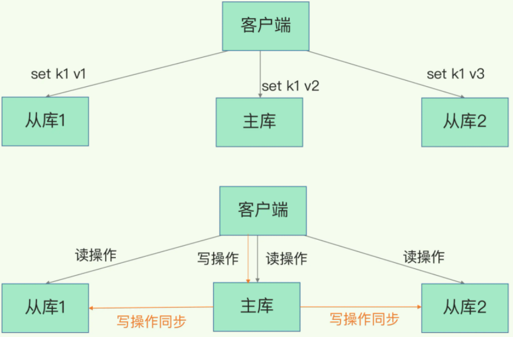
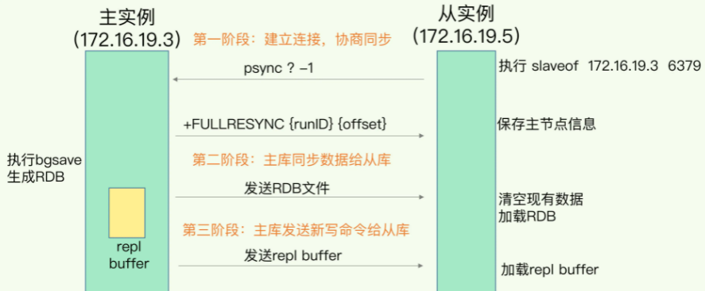
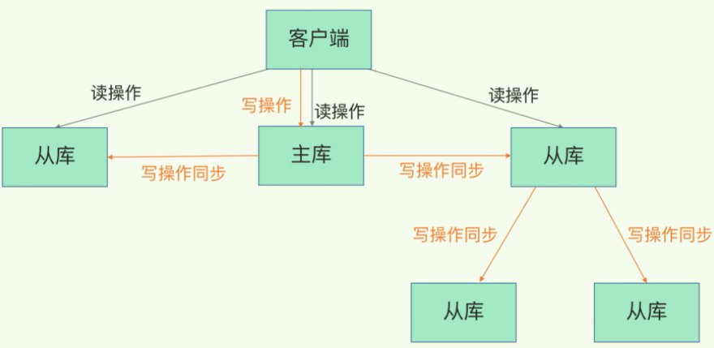
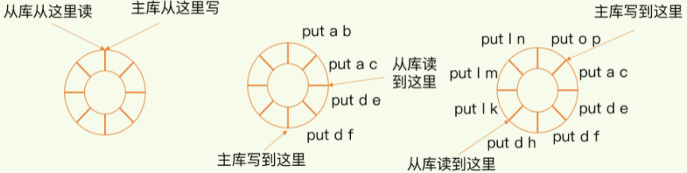
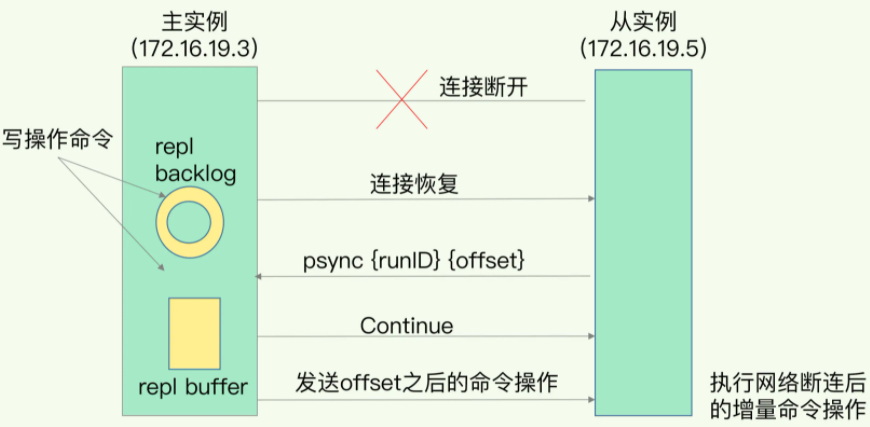

redis主从库模式
Redis 具有高可靠性，这里有两层含义：
- 一是数据尽量少丢失，AOF 和 RDB 保证此能力。
- 二是服务尽量少中断，Redis 的做法就是增加副本冗余量，将一份数据同时保存在多个实例上。
主从库模式
Redis 提供了主从库模式，以保证数据副本的一致，主从库之间采用的是读写分离的方式。
- 读操作：主库、从库都可以接收；
- 写操作：首先到主库执行，然后，主库将写操作同步给从库。

为什么要采用读写分离：每一次的修改请求都发送到不同的实例上，在不同的实例上执行，那么，这个数据在这三个实例上的副本就不一致了（分别是 v1、v2 和 v3）。在读取这个数据的时候，就可能读取到旧的值（除非增加分布式锁）。
主从库同步流程
当我们启动多个 Redis 实例的时候，它们相互之间就可以通过 replicaof（Redis 5.0 之前使用 slaveof）命令形成主库和从库的关系，之后会按照三个阶段完成数据的第一次同步。
例如，现在有实例 1（ip：172.16.19.3）和实例 2（ip：172.16.19.5），我们在实例 2 上执行以下这个命令后，实例 2 就变成了实例 1 的从库，并从实例 1 上复制数据：
replicaof 172.16.19.3 6379
主从库间数据第一次同步的三个阶段，如下图：

第一阶段
第一阶段是主从库间建立连接、协商同步的过程，主要是为全量复制做准备。
具体来说，从库给主库发送 psync 命令，表示要进行数据同步，主库根据这个命令的参数来启动复制。psync 命令包含了主库的 runID 和复制进度 offset 两个参数。
runID，是每个 Redis 实例启动时都会自动生成的一个随机 ID，用来唯一标记这个实例。当从库和主库第一次复制时，因为不知道主库的 runID，所以将 runID 设为“？”。
offset，此时设为 -1，表示第一次复制。
主库收到 psync 命令后，会用 FULLRESYNC 响应命令带上两个参数：主库 runID 和主库目前的复制进度 offset，返回给从库。从库收到响应后，会记录下这两个参数。
这里有个地方需要注意，FULLRESYNC 响应表示第一次复制采用的全量复制，也就是说，主库会把当前所有的数据都复制给从库。
第二阶段
在第二阶段，主库将所有数据同步给从库。从库收到数据后，在本地完成数据加载。这个过程依赖于内存快照生成的 RDB 文件。
具体来说，主库执行 bgsave 命令，生成 RDB 文件，接着将文件发给从库。从库接收到 RDB 文件后，会先清空当前数据库，然后加载 RDB 文件。
在主库将数据同步给从库的过程中，主库不会被阻塞，仍然可以正常接收请求。为了保证主从库的数据一致性，主库会在内存中用专门的 replication buffer，记录 RDB 文件生成后收到的所有写操作。
第三阶段
最后，也就是第三个阶段，主库会把第二阶段执行过程中新收到的写命令，再发送给从库。当主库完成 RDB 文件发送后，就会把此时 replication buffer 中的修改操作发给从库，从库再重新执行这些操作。这样一来，主从库就实现同步了。
硬盘和无盘复制
基于硬盘和无盘复制，可以通过这个参数repl-diskless-sync设置。一个全量同步，需要一个新的RDB文件dump出来，然后从主库传到从库。可以有两种情况：
- 基于硬盘（disk-backed）：主库创建一个新进程dump RDB，完事儿之后由父进程（即主进程）增量传给从库（多个 replicas 通过排队来同步 RDB 文件）。
- 基于socket（diskless）：主库创建一个新进程直接dump RDB到从库的socket，不经过主进程，不经过硬盘（主库等待一个repl-diskless-sync-delay的秒数，如果没从库来的话，就直接传，后来的得排队等了。否则就可以一起传。适用于disk较慢，并且网络较快的时候，可以用diskless，默认用disk-based）。
主从级联模式
一次全量复制中，对于主库来说，需要完成两个耗时的操作：生成 RDB 文件和传输 RDB 文件。如果从库数量过多，主库有网络带宽、fork阻塞主线程等压力。
为了解决这个问题，redis支持主从级联模式，可以通过“主 - 从 - 从”模式将主库生成 RDB 和传输 RDB 的压力，以级联的方式分散到从库上。如下图：

一旦主从库完成了全量复制，它们之间就会一直维护一个网络连接，主库会通过这个连接将后续陆续收到的命令操作再同步给从库，这个过程也称为基于长连接的命令传播，可以避免频繁建立连接的开销。
主从库断网恢复
在 Redis 2.8 之前，如果主从库在命令传播时出现了网络闪断，是进行一次全量复制，开销非常大。从 Redis 2.8 开始，网络断了之后，主从库会采用增量复制的方式继续同步。
增量复制的流程
当有从库链接上主库后，主库就会把写操作写入repl_backlog_buffer （是一个环形缓冲区，主库会记录自己写到的位置，从库则会记录自己已经读到的位置）这个缓冲区。如下图：

- 刚开始的时候，主库和从库的写读位置在一起，这算是它们的起始位置。随着主库不断接收新的写操作，它在缓冲区中的写位置会逐步偏离起始位置，我们通常用偏移量来衡量这个偏移距离的大小，对主库来说，对应的偏移量就是 master_repl_offset。主库接收的新写操作越多，这个值就会越大。
- 同样，从库在复制完写操作命令后，它在缓冲区中的读位置也开始逐步偏移刚才的起始位置，此时，从库已复制的偏移量 slave_repl_offset 也在不断增加。正常情况下，这两个偏移量基本相等。
增量复制流程，如下图：

- 主从库的连接恢复之后，从库首先会给主库发送 psync 命令，并把自己当前的 slave_repl_offset 发给主库，主库会判断自己的 master_repl_offset 和 slave_repl_offset 之间的差距。
- 在网络断连阶段，主库可能会收到新的写操作命令，所以，一般来说，master_repl_offset 会大于 slave_repl_offset。此时，主库只用把 master_repl_offset 和 slave_repl_offset 之间的命令操作同步给从库就行。
- 主库和从库之间相差了 put d e 和 put d f 两个操作，在增量复制时，主库只需要把它们同步给从库，就行了。
强调，因为 repl_backlog_buffer 是一个环形缓冲区，所以在缓冲区写满后，主库会继续写入，此时，就会覆盖掉之前写入的操作。如果从库的读取速度比较慢，就有可能导致从库还未读取的操作被主库新写的操作覆盖了，这会导致主从库间的数据不一致。
因此，我们要想办法避免这一情况，一般而言，我们可以调整 repl_backlog_size 这个参数。这个参数和所需的缓冲空间大小有关。缓冲空间的计算公式是：缓冲空间大小 = 主库写入命令速度 操作大小 - 主从库间网络传输命令速度 操作大小。在实际应用中，考虑到可能存在一些突发的请求压力，我们通常需要把这个缓冲空间扩大一倍，即 repl_backlog_size = 缓冲空间大小 * 2，这也就是 repl_backlog_size 的最终值。
注：从库正常情况下会每秒给主库发送一个replconf ack命令，主库会根据这个命令的达到时间判断和从库的连网情况。如果超过了repl_timeout时间，就会和从库断开连接了。从库再和主库连接时，会发送自己的复制进度，如果要复制内容在缓冲区中已经被覆盖了，那么就不再做增量复制了，而是进行全量复制。repl_backlog_buffer的大小是redis重要的调优参数。避免此种情况发生，可以考虑后面讲到的切片集群来分担单个主库的请求压力。
注：repl_backlog_buffer和replication buffer理解比较混淆，解释如下：
1、repl_backlog_buffer：就是上面我解释到的，它是为了从库断开之后，如何找到主从差异数据而设计的环形缓冲区，从而避免全量同步带来的性能开销。如果从库断开时间太久，repl_backlog_buffer环形缓冲区被主库的写命令覆盖了，那么从库连上主库后只能乖乖地进行一次全量同步，所以repl_backlog_buffer配置尽量大一些，可以降低主从断开后全量同步的概率。而在repl_backlog_buffer中找主从差异的数据后，如何发给从库呢？这就用到了replication buffer。
2、replication buffer：Redis和客户端通信数据缓冲区（从库、redis-cli都是客户端），Redis先把数据写到这个buffer中，然后再把buffer中的数据发到client socket中再通过网络发送出去，这样就完成了数据交互。所以主从在增量同步时，从库作为一个client，也会分配一个buffer，只不过这个buffer专门用来传播用户的写命令到从库，保证主从数据一致，我们通常把它叫做replication buffer。
3、replication buffer有限制的：如果主从在传播命令时，因为某些原因从库处理得非常慢，那么主库上的这个buffer就会持续增长，消耗大量的内存资源，甚至OOM。所以Redis提供了client-output-buffer-limit参数限制这个buffer的大小，如果超过限制，主库会强制断开这个client的连接，此时主从复制会中断，中断后如果从库再次发起复制请求，可能会导致恶性循环，引发复制风暴，这种情况需要格外注意。
小结
主从库同步的基本原理，有三种模式：全量复制、基于长连接的命令传播，以及增量复制。
- 全量复制虽然耗时，但是对于从库来说，如果是第一次同步，全量复制是无法避免的。建议：一个 Redis 实例的数据库不要太大，一个实例大小在几 GB 级别比较合适，这样可以减少 RDB 文件生成、传输和重新加载的开销。
- 为了避免多个从库同时和主库进行全量复制，可以采用“主 - 从 - 从”这一级联模式，来缓解主库的压力。
- 长连接复制是主从库正常运行后的常规同步阶段。在这个阶段中，主从库之间通过命令传播实现同步。
- 长连接复制期间如果遇到了网络断连，增量复制就派上用场了。建议留意一下 repl_backlog_size 这个配置参数。如果它配置得过小，可能会导致从库的复制进度赶不上主库，进而导致从库重新进行全量复制。所以，通过调大这个参数，可以减少从库在网络断连时全量复制的风险。
问题
为什么主从库间的复制不使用 AOF 呢？
答：主要有两点原因：
- 文件小，带宽消耗小。RDB文件内容是经过压缩的二进制数据（不同数据类型数据做了针对性优化），文件很小。传输RDB文件可以尽量降低对主库机器网络带宽的消耗。
- 速度快。一是文件小，读取整个文件的速度会很快，二是因为RDB文件存储的都是二进制数据，从库直接按照RDB协议解析还原数据即可，速度会非常快。
- 使用AOF做全量同步，意味着必须打开AOF功能，打开AOF就要选择文件刷盘的策略，选择不当会严重影响Redis性能。